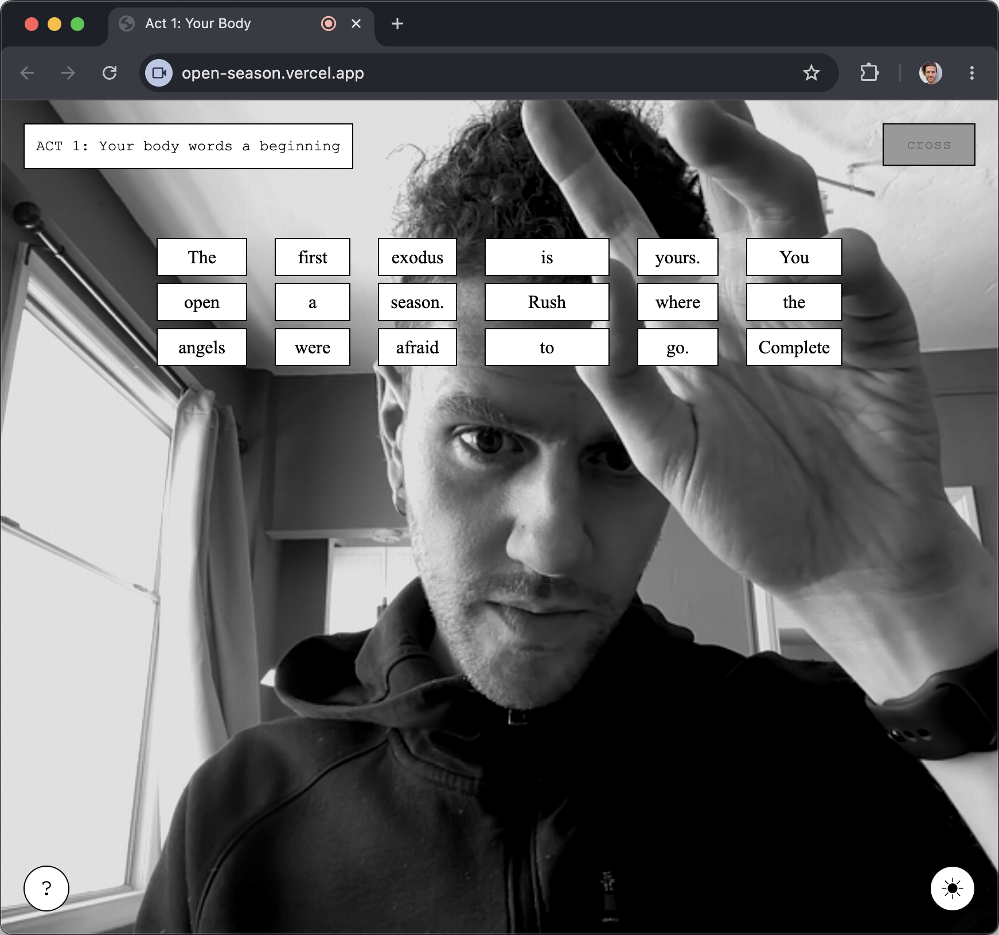

Open Season

Open Season is a browser-based computational theater in three acts. Belonging in three acts. You arrive on the light side of the screen. There is a darker side too, accessible from a button in the upper right, where the CBP’s self-deport home app casts its shadow. The two sides talk to each other. One is poem. One is form. Both are interfaces of arrival.
Act One. Your body. Move the way your body wants to. The first exodus is yours. You open a season. Rush where the angels were afraid to go. Complete a course in impossibility. The words you use now are ripe, full, sugar, their skin the domestic tempting of cosmic crisps. Have you eaten? Have you noticed how hunger sounds like a country ready to forget you?
Act Two. Your voice glossaries belonging. Voice out what home has been for you. Displacement: softer replacement. Identity: the unintended byproduct of the words you use and a lease on an unabridged self. Words: language powder ripping the day open like commerce or pieces of melancholy. Body: incongruency making due with the supposed motherly press of gravity.
Act Three. Your hands language home. Draw the shape of home. It has been twenty years and change. And change, and you thought it easy to close the mouth of a wound, straighten the crooked atoms, the canines of the savior, ride this petrichor and the sweat of lightning, the bells of color. You’ve moved to the kingdom of smaller dreams, and now all you think about is love. And money. But you too were elected snake in this garden, and so you will slither against the warm hilltop rocks.
The dark side is plainer. It reproduces the rhetoric of the self-deport app, vocabulary stripped of warmth, instructions phrased as care. The piece does not editorialize. It places the two sides next to each other and asks you to feel where one ends and the other begins. Migration as ritual, then migration as form. The interface as a site of agency, and the same interface as a site of coercion.
Open Season was published in The New River Journal Issue L, in May 2026. Three acts. Two sides. One body trying to spell home with the tools the state hands it.